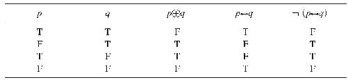

概率的逻辑解释是经济学家凯恩斯于1921年引入的，其背后的基本思想是：命题（或者陈述）之间存在的是逻辑关系，而不是衍推（entailment）关系。为了搞清楚这个思想是什么意思，让我们首先来看一下我们是怎样根据概率的形式去定义衍推关系的。为了达到这个目的，我们需要使用条件 概率，即P（p, q ）或者P（p｜q ）（这是通行的关于同一件事情的两种不同的写法）。粗略地讲，P（p, q ）表示的是给定q 的情况下p 的概率。更精确的解释我会在下面给出，它表示的是，在假设q 为真的情况下p 的概率。
中译本边码：19
举个例子有助于我们理解什么是条件概率。设想我现在跟你打个双倍返还的赌（意思是：你给我一定数量的钱，如果打赌你赢了，那么我会双倍还给你）：你不会读完这本书的所有章节。同时设想，如果你接受了我的提议，那么你必须拿出的赌资（你的“赌注”）总额要足够去做某件有意思的事情，例如在外面消遣一个美妙的夜晚，但只有一个，不会有更多。（因此，如果你获胜，你就可以有两个在外面消遣的美妙夜晚，而不是只有一个。）你也许并不想打这个赌，因为你不能确定你会读完全部的章节。而且，只是为了多消遣一个美妙的夜晚而承诺读完全部章节，也不值得。
中译本边码：20
然而，现在设想我跟你打了另外一个不同的赌。这个赌和其他赌类似，但在如下意义上它是有条件的 ：你一直读到了最后一章的倒数第二页。我的意思是，只有“你已经读到了本书最后一章的倒数第二页”为真时，这个赌才是有效的。如果这一点从来不会成真，那么你的钱会毫无损失。（人们有时会说，这个赌“取消了”。）但如果这一点变成真的，这个赌就继续生效。这时候，你就要把你的赌资给我了。如果你读到了最后一章最后一页，你将获得你的赌资双倍的赌金。如果你没有做到，你将失去你的赌本。我猜这个赌对你似乎更有吸引力。你也许会认为，如果你知道你已经打了这个赌，这就会鼓励你多读一页书即可。（然而我不得不遗憾地告诉你，我不会真的 跟你打这个赌！）
现在令“p ”为“你将读到这本书的每一页”，“q ”为“你已经把这本书读到了最后一章的倒数第二页”。在上面讨论的第一种情况下，你对P（p ）的估算——一个非条件 概率——将影响到你是否会去打这个赌。然而在第二种情况下，管用的却是你对P（p, q ）的估算。（实际上，在我们稍后将会回到的一个主题上，我们可能会认为，你考虑到的这两个概率都是条件概率。在第一种情况下，你掌握了自己提出的一些背景假定，其中一些最终可能会被证明是假的；例如，你也许期望这本书后面的章节跟第一章一样，读起来让人感到舒适。让我们把所有这些背景假定表示为b 。于是，我们可以说，第一种情况下，你实际 考虑的是P（p, b ）。在你继续往下读之前，你也可能愿意考虑一下你在第二种情况下实际考虑的事情是什么。）
现在让我们来考虑如何用概率表达逻辑衍推关系。设想q 衍推p （并且p 和q 都不是逻辑矛盾）。P（p, q ）的值会是什么呢？如果我们根据逻辑可能性（或者逻辑必然性）考虑衍推的话，答案就会变得显而易见了。说q 衍推p ，不过就是说，当q 为真时，P （在逻辑上）不 可能为假。由于对任意给定命题来说只有两个可能的值，即真和假，所以我们可以得出结论说，P（p, q ）等于1。
中译本边码：21
图3.1 当q 衍推p 时，在q 为真的逻辑上可能的世界里p 的结果
如果这样说还是不清楚，那就返回来考虑我们在讨论经典解释时用过的图。当考虑P（p, q ）时，我们感兴趣的状态是p (1) ；q 是“给定的”。一般来说，p 有两个可能的值；在每一个逻辑上可能的世界里，p 或者为真，或者为假。所以现在，在我们的图中，为了给紧贴箭头的地方填上一个值，我们可以这样问：在哪一部分逻辑上的可能世界里，（“给定的”）q 为真，但同时p 为假？（一个逻辑上的可能世界就是一个在其中不违反逻辑规律的世界。）根据我们对衍推的定义，回答是没有。因此，0必须紧贴着下边那个箭头，而且通过一个排除过程，必须紧贴着上边那个箭头。（一旦假定了p 只能或者为真或者为假，“当q 为真时，p 不可能为假”就等值于“当q 为真时，p 必然为真”。）
同样的推理表明，根据概率的逻辑观点，当q 与p 相矛盾时，P（p, q ）为0。为了表明这一点，我们只需要注意，与p 相矛盾与衍推出“非p ”（我把这写作┓p ）意思是一样的。当q 衍推出┓p 时，P（┓p, q ）等于1，因此P（p, q ）必定为0。简言之，如果在q 为真的所有世界里┓p 都为真，那么在q 为真的所有世界里p 就必定为假。
接下来自然要提出的一个问题是：“当q 与是否p 不相关时，P（p, q ）等于多少？”令p 代表“英格兰最高峰的高度是海拔978米”，而q 代表“达瑞的眼睛是蓝色的”。尽管这两者都是真的，但（有理由认为）它们是完全不相关的；q 不是p 的证据，p 也不是q 的证据。现在让我们只考虑那些q 在其中为真的可能世界。我们应该期望在大多数这样的世界里p 为真吗？似乎并不是这样。我们应该期望在大多数这样的世界里p 为假吗？似乎也不是这样。因此，断定P（p, q ）等于二分之一似乎是公平的。这是剩下的唯一选择了。（一般来说，当p 独立于q 时，P（p, q ）就等于P（p ），你会在附录A中看到这一点。因此，当p 与q 相互独立时，在P（p ）等于二分之一的条件下，P（p, q ）只能等于二分之一。下一部分，我们将讨论如何去表示像P（p ）这样的无条件概率。）
中译本边码：22
还有哪些情况需要考虑呢？用卡尔纳普（Carnap 1950）引入的术语说，还有就是“q 部分衍推 p ”的情况。如果q 部分地衍推出p 的程度大于衍推出┓p ，那么P（p, q ）将大于二分之一且小于1。如果q 部分地衍推出┓p 的程度大于衍推出p ，那么P（p, q ）将小于二分之一且大于0。请记住，无论在哪种情况下，P（┓p, q ）都将等于1－P（p, q ）。或者换种说法，P（┓p, q ）＋P（p, q ）＝1，因为p 与非p 当中必定有一个是真的。
我这里给出一个例子，其中P（p, q ）显然远大于二分之一：
q ：1000名性亢奋患者每天服用一颗A型药丸，服用一年。在这一年中，这些人中没有怀孕的。
p ：在每天服用一颗A型药丸的一段时间内，玛丽将不会怀孕。
第一条信息q 似乎表明，A型药丸是避孕药；而且，我们可以想象从对这种药丸的一种医学试验中获得这样的信息。（设想我们已经排除了那些由于某次忘记服药而导致怀孕的人。）然而注意到下面这一点是重要的：q 并没有说到任何关于医学试验的事情，而新的信息可能会出现，它会表明p 是可疑的。例如，设想你发现了下面这个情况：
r ：q 中说到的患者都是男性。
现在似乎就没有任何证据可以证明p 或者反对p 了。一个名叫阿钦斯坦（Peter Achinstein 1995）的科学哲学家提出了一个更加激进的想法。他认为，r 的发现将向我们表明，P（p, q ）并不像我们开始所认为的那样远大于二分之一。在他看来，q 在多大程度上是p 的证据，根本就不是逻辑 上的事情。相反，q 是否支持p （或者是否支持┓p ）属于经验研究方面的问题。然而，逻辑观点的倡导者们自然的回应——或者至少是一开始的回应——是说，我们必须防止把P（p, q &r ）与P（p, q ）给弄混了。P（p, q &r ）的值不一定能告诉我们P（p, q ）的值是什么。一旦我们获得新的信息，我们就会认为，不同的条件概率与搞清楚p 是否为真是相关的。情况就是这样。
中译本边码：23
按照逻辑解释，如果认为概率本质上就是独立的或者无条件的，那基本上就没有什么意义了。因此，从字面上理解，说某个命题是可能的（probable）——例如“到2020年，中国可能 是世界上最强大的经济力量”——没有任何意义。如果已经假定了概率表示的是衍推的不完全程度这个背后的思想，这并没有什么可奇怪的。和“p 被衍推出”的情况完全相同，当我们说“p 被部分衍推出”时，同样会引出一个问题：“被什么东西部分衍推出？”凯恩斯很简洁地表达了这个思想：
没有一个命题自身就是可能的或者是不可能的，正如没有一个地方本质上就是远的；同一个陈述的概率会因为所提出的证据的不同而发生改变，这好像就是其指称的来源。和说“b 等于”或者“b 大于”一样，说“b 是很可能的”同样也没有什么用……（Keynes 1921： 6—7）
当根据逻辑概率进行思考时，我们必须因此留意究竟什么东西是被“给定”的，或者位于所讨论的条件概率公式中逗号右侧的部分究竟要被理解成什么。有关一个事件，当某人（诚实地）说“我可能会来参加”（比如一次哲学研讨会）时，他通常是在相关个人背景信息的基础上才这样说的。如果后来他们说“我很可能不能去参加”，那么正常情况下这是因为他们的背景信息发生了变化。他们可能获知了某些新的信息，例如他们生病了，或者在那时会可能有一场激情的约会。（激情的约会通常比哲学研讨会更好。相信我。）
中译本边码：24
然而，没有什么能够阻止我们用条件概率去定义非条件概率。例如，波普尔提出的一个窍门是，将p 的非条件逻辑概率定义为p 的以任意重言式T 为条件的逻辑概率。（对那些不熟悉逻辑的人来说，重言式的例子是┓（p &┓p ）或者“p 与┓p 都为真并非实际情况”，以及p ∨┓p 或者“要么p 为真，要么┓p 为真”。它们分别被称为“不矛盾律 ”和“排中律 ”。它们在所有逻辑可能的世界里都是真的。）简言之，波普尔是说，P（p ）应该被理解为表示的是P（p, T ）。就数学来说，不会有人反对把P（p, T ）写成P（p ）。
在继续进行我们的讨论之前，让我们暂停一下，考虑逻辑是如何与信念相关的。这样做是有价值的，因为有些人在谈论逻辑解释的时候，就好像它只和我们所相信的事情相关，尽管这是一种误导性的看法。凯恩斯在一个地方好像就犯了这个错，他写道：
假设我们的前提由任意命题的集合b 构成，我们的结论由任意命题的集合a 构成，如果对b 的知识以程度α 证成了对于a 的合理的置信，我们就说在a 与b 之间存在一个程度为α 的概率关系 。（Keynes 1921： 4）
这里的语言与前面谈论逻辑关系（例如衍推与部分衍推）时的语言大不相同。但实际上，正如凯恩斯后来所解释的，他只是说，逻辑关系旨在明确对我们来说，相信什么才是合理的：
中译本边码：25
（“概率”）最根本的意义……指的是两个命题集之间的逻辑关系……从这个意义我们可以推出如下意义：“可能 ”（probable）这个词适用于合理置信度（the degrees of rational belief）。（Keynes 1921： 11）
为了搞清楚这个基本思想是什么意思，让我们重新思考一下衍推关系。如果p 衍推q ，但我相信p 和┓q ，根据凯恩斯的观点，我就拥有不合理的 置信度。为什么呢？因为我没有认识到p 为真而q 为假是不可能的 。
凯恩斯所说的“合理置信度”到底是什么呢？下一章我们将深入探讨这个问题。目前只把它看作“合理确信（confidence）的程度”。因此，如果你知道p ，并且p 衍推q ，那么你对q 有十足的信心（如果你考虑它）就是合理的；如果你对q 有较低程度的信心，你就达不到合理的程度。同样，如果p 以程度r 部分衍推q ，而且你知道p ，那你就不应该以不同于r 的程度对q 有信心。这就是凯恩斯的观点。
然而我们也要注意到，有人可能会接受概率的逻辑解释，但不同意 凯恩斯对合理置信度的说明。例如，你也许会认为相信某件你没有证据的事情（例如，如果会有实际上的好处）有时候是合理的。帕斯卡赌（Pascal’s wager）就是一个好例子。粗略地说，它的内容是这样的。如果你相信上帝，那么，如果上帝确实存在，你就会得到大大的好处（例如升入天堂）；而如果上帝并不存在，那你也不会失去什么。如果你不相信上帝，那么，如果上帝确实存在，你将遭受严重的惩罚（例如永世受罚）；而如果上帝不存在，那么你同样也不会得到什么。因此，你应该相信上帝。如果你刚好能够 选择是否要去相信上帝——你不能选才是合理的——认真对待这种论证就是有价值的。（这个论证也许还有其他问题——例如，如果你相信上帝但上帝不存在，你可能就会失去什么东西。比如你可能会在教堂里白白花费很长时间，而这些时间如果用到其他地方，将会更好。但帕斯卡赌只是表明，在有些 情形当中，信念可能因为纯实用层面的考虑才是合理的。）
换句不那么极端的话说，你也许会认为，凯恩斯有点太严格了，置信度应该仅仅是大约等于 部分衍推的程度或与此类似的东西。可能的处理方式还有很多，但我们无须过多纠缠。因为本章关注的是概率的逻辑解释，所以我们还是应该聚焦在这种解释所依赖的（所谓）逻辑关系上。
中译本边码：26
至此我们已经谈到了概率的逻辑观点的基础知识，并确定了在某些具体环境下逻辑概率的值（例如当给出的是衍推关系的时候）。接下来的问题是，当给出的是部分衍推关系时，我们该如何计算逻辑概率的值。例如，回想上文涉及玛丽的场景。如果有的话，P（p, q ）的精确 值应该是什么呢？
事实上，回答这个问题是非常困难的。因此，我们还是讨论一下怎样更一般性地处理测量问题。我们将谈到本章的男主人公，也就是凯恩斯给出的说明。他的这个说明已经被证明是一种最有影响力的说明，而且也是经过深思熟虑后给出的最具系统性说明。
凯恩斯的说明首先是给出了如下提议：我们能够基于直觉或者洞察而认识某些概率关系。在说这番话的时候，他心里的想法好像是，对于把握命题之间的关系来说，我们具有某种超感觉的能力或者官能。这乍听起来有点神秘。那就让我们通过一段简短的对话进一步研究一下吧。
学生乙： 我并不认为我拥有这种能力！我深信我的全部知识都来自经验……
学生甲： 但可以肯定凯恩斯不是非要否认这一点吗？
达瑞： 你能解释一下为什么你会这样认为吗？
学生甲： 首先，说我们能够把握命题之间的关系，并不是说我们能够在不诉诸经验的情况下理解命题——也就是知道它们是什么意思，之所以这样说，是因为没有更好的表达。这里以“天空是红色的”为例就很恰当。不诉诸经验，我们根本就无法理解它。
中译本边码：27
学生乙： 很好，这好像是对的。这么说，在一定程度上，凯恩斯可能是一个经验主义者……
达瑞：至少 在这个程度上，他就是一个经验主义者。
学生甲： 为什么不再多说几句呢？让我们考虑一下非逻辑知识的基础。按照这种解释，洞察也许不会让我们知道像“刚刚我能看到一个红色的东西”这样一个相当基本的事实。这可能是一件经验上的事情。
达瑞： 正确。因此，正如我相信凯恩斯所认为的那样，有人可能认为，我们是从一个你称之为“基本事实”，或者我称其为“观察陈述”的经验基础开始的，然后通过我们的理性洞察努力向前，直到更高级的知识。这就是一种把握理论和实际的“观察陈述”之间、理论与可能的“观察陈述”之间，甚至不同的（可能的或者现实的）“观察陈述”之间的关系的能力。
学生乙： 你能举个例子吗？
学生甲： 可以。一旦经验帮助我们领会到了“白色的”和“天鹅”的意思，我们就可以认识到，“存在一只非白色的天鹅”能够证伪 “所有天鹅都是白色的”这个理论。但只有经验才能告诉我们“存在一只非白色的天鹅”是否为真，并因此告诉我们“所有天鹅都是白色的”是否为真。
达瑞： 确实如此。这是一个相对来说没有争议的例子，因为其中包含衍推关系。凯恩斯只是认为，存在着包含部分衍推的类似情况。
事实上，凯恩斯写道：“假如一些命题的真，以及一些论证的有效性，不能被直接认识到，我们就可能不会取得任何进步。”（Keynes 1921：53，f.1）但他并不认为所有的 概率关系都能被直接认识到。正好相反，他认为，我们常常需要去计算 概率关系，而且可以使用特定的原则进行计算，也就是无差别原则（Principle of Indifference）。
按照凯恩斯的观点，这些判断对于正常的衍推关系同样是成立的。例如，我们可以很容易地发现，从“蒂姆是一只黑色的兔子”可以衍推出“蒂姆是一只兔子”（或者更加形式化地表达为p &q 衍推出q ）。但是，接着前述段落的引文，我们可以搞清楚其他这样的关系，方法是通过使用“逻辑证明的方法……这种方法能够让我们知道命题是真的，而这些完全超出了我们的直接洞察所能达到的范围”。例如，我们可能需要使用一个真值表来判定在更复杂的情况下是否可以给出一种衍推关系。
中译本边码：28
表3.1 p⊕q 和┓（p ↔ q ）的真值表

这里我可以给出一个例子。请思考“以下不是真的：p 当且仅当q ”是否衍推“或者p 或者q ”。表3.1能让我们对此获得确定的答案。［如果你不熟悉逻辑术语，那么，这里有一个解释：“⊕”在“或者……或者……”的一种不相容的意义上代表“或者”，其中“两者都……”的意思被排除了；“↔ ”代表“当且仅当”。于是，“p ⊕q ”的意思是“或者p 或者q （但并非既p 又q ）”；“┓（p ↔ q ）”的意思是“以下不为真：p 当且仅当q ”。］每一行——水平走向的行——代表所有陈述的一个可能的真值集。这四行合在一起穷尽了所有的可能性。我们来考虑第一行，它表明，当p 为真（T）且q 为真（T）时，我们关心的两个命题——p ⊕q 和┓（p ↔ q ）——都为假（F）。然后我们再来考察p 为假（F）且q 为真（T）时的情境，如此等等。
从这个表我们可以看出，只要┓（p ↔ q ）为真，p ⊕q 就为真，反之亦然。（在第二行和第三行存在两种可能性，在这两行这两个都是真的。在其他两行这两个都不是真的。）因此，事实上，这两个命题相互 衍推。不仅如此，我们还可以看到，当其中一个为假时，另一个也为假。（事实上，它们每一栏的真值都是相同的。这表明，在所有可能情境当中它们都具有相同的值。）因此，它们之间具有一种更强的关系；它们是逻辑上等值的 ，或者，它们说出了同样的事情。但是，如果没有逻辑学方面的训练，这些就远不是那么明显的。建构比如上所示更复杂的关系并不困难，如果不使用真值表或者其他某种证明方法，那么这些更加复杂的关系就算是逻辑学专家也无法认识到。下面就是这个例子的用处：如果不完成一个证明，你就不可能识别出其中的衍推关系。因此，如果你发现细节方面难以理解，也不要发愁，那只是因为你还没学过逻辑学。
中译本边码：29
现在看来，我们不能使用上面这样的真值表去判定两个陈述之间成立的是哪种类型的部分衍推（如果有的话）。更准确地说，我们需要前面提到的那个特定的原则。凯恩斯对它描述如下：
无差别原则断言的是，如果没有已知的理由去断定几个候选者中的一个主题而不是另一个，那么，相对于这样的知识，就要断言这些候选者中的任意一个都具有相等的概率。因此，如果没有正面的根据去赋予不同的概率，那就要给每一个候选者一个相等的概率。（Keynes 1921： 42）
设想我正准备在1到10之间选择一个整数。我选择5的概率是多少呢？在这里，你没有理由认为我会选择某个特定的数字，而不是其他数字。因此，根据无差别原则，你应该给每种可能的结果赋予相等的概率。因为总共有十种可能的结果，所以每一种的概率都将是十分之一。实际上，这比做一个标准的逻辑证明要容易得多。或者说，初看上去就是这样。（这个思路在直觉上也是合理的。我早就听说过聪明而且受过很高教育的人们，例如我的学术同行说出“我有四分之一的机会得到这份工作”这样的话，因为他已经进入了求职面试最终的四人候选名单。但事情真的就是这样吗？）
逻辑解释最严重的问题是我们在上文刚刚看到过的问题，也就是：我们如何才能确切地测量逻辑概率。如果我们不能像我们定义的那样测量逻辑概率的话，我们可能就会怀疑它们究竟是否存在。尤其是，我们可能会怀疑在命题之间是否存在着程度不同的部分衍推关系，或者在命题之间压根儿就不存在什么部分衍推关系。
中译本边码：30
这种解释存在的基本问题是，无差别原则并没有告诉我们该如何划分不同的可能性。在我学生时代发生的一件事很恰当地表明了这一点。（这是一个真实的故事。我“虚度”了自己的青少年时代！）那时候，我正参加一个关于熵与统计力学的讲座——我记得，演讲者的主题是无序的情境如何会比有序的情境更加可能——而我当时正在一个酒吧忙于对此大加夸耀。不知怎么的，我跟另外一个酒吧常客争论了起来，他是一个有钱的律师。最后，为了停止争论，我决定跟他打赌。我的提议是，我们抛掷5次硬币，如果结果是2次或者3次正面朝上，那么我将赢得5英镑，否则他将赢得5英镑——我提出的使用硬币的想法直接来自这次讲座。我同时还说，我们可以连续玩，直到一方想停止。他很急切地接受了这次赌约。一开始，他输了。但他确信我只是运气好，就这样接连玩了一个多小时（直到酒吧打烊）。最后，我赢了大约60英镑，一旁被逗乐的观众们让我请了好几杯饮料。这一晚上的“战果”挺不赖！律师到最后离开时，还是确信他只是运气不好，我对此不以为然，他说在下次见面时继续向我挑战。但是，我觉得继续这样玩有点不好意思，于是就礼貌地拒绝了。（在这件事情上，我唯一的损失是因为喝多了，第二天醒来有点儿头疼。）
这是怎么回事呢？简单的回答是，律师给凯恩斯称之为可区分的 （divisible）结果赋予了相等的概率，而我却选择了不可区分的 结果。也就是说，律师的考虑如下：
5次正面向上 可能性一
4次正面向上 可能性二
3次正面向上 可能性三
2次正面向上 可能性四
1次正面向上 可能性五
0次正面向上 可能性六
因为律师给上面每一种可能性都赋予了相同的概率，即六分之一，因而他就会期待我多半会输掉。更具体地说，他认为在这6种可能性当中，我只有两次获胜的机会，因而在次数上只有三分之一的获胜可能。无疑，他期待着让他对面这个不知天高地厚的年轻人老老实实地待着！
中译本边码：31
然而从我的视角看，我完全有资格成为一个获胜者。这是因为：我考虑到了不可区分的 结果，并且给它们指派了相等的概率。（至少在下面这样的情况下这些结果是不可区分的：如果每枚硬币或者正面朝上着地或者反面朝上着地，以至于像一枚硬币侧面着地这样的事件都会被忽略，我们就完全可以认为这次游戏完成了。这些都是隐含的规则。）说得更具体一点，我留意到了以上列出的每种可能性是通过哪些方式 发生的。考虑下面这些情况，这里的H代表“正面”结果，而T代表“反面”结果，来看一下我是怎么想的：
HHHHH 5次正面向上的结果有1种可能
HHHHT
HHHTH
HHTHH 4次正面向上的结果有5种可能
HTHHH
THHHH
TTHHH
THTHH
THHTH
THHHT
HTTHH 3次正面向上的结果有10种可能
HTHTH
HTHHT
HHTTH
HHTHT
HHHTT
与此相对称，你会发现，如果你想象把上面的每个H与T进行交换（反之亦然），那就分别有10种可能的结果对应着“2次正面”，5种可能的结果对应着“1次正面”，仅有1种可能的结果对应着“0次正面”。（在数学当中，像“2次正面和3次反面”的结果被称为一个组合 。“HHTTT”就是该组合的一种排列 。简单讲，顺序对于排列很重要，但对于组合则却无关轻重。）因此从我的视角看，在这个游戏中“2次正面”或者“3次正面”的概率是八分之五，而且所选的可能性也对我有利。我赢这么多钱这一事实表明我是正确的，尽管实际上我可能 只是由于运气好。（事实上，假设律师对概率的理解是正确的，那就有可能计算出我成功的概率，为了做到这一点，我们需要知道我们究竟玩了几次游戏，每一次的结果是什么。没什么可奇怪的，因为喝了一些啤酒，所以我记不得了。）如果你遇见我而且想帮我进一步验证这一点，那么非常欢迎你和我一起玩这个游戏。当然，要为了钱！如果你的有钱朋友也想玩这个游戏，请把他们也带来一起玩。人越多越好。
中译本边码：32
凯恩斯一定会说，我是通过选择不可区分的结果而做了正确的事情。否则，我将处在一个悖论性情境当中，在其中无差别原则将会表明，在一个给定游戏当中，我获胜的概率同时具有两个不同的值：三分之一（律师计算的结果）和八分之五（我计算的结果）。你可能会认为我会通过表明律师的方法是正确的而我的方法是错误的，从而解决这个难题。然而，这样说的问题在于，在划分可能性上，经常存在不同的、不相容的、可区分 的方法。假想我正准备买一只兔子，并且问你，我买到一只黑兔子的概率是多少。你可能会把“黑色的”和“非黑的”作为两种可能。或者你可能会把“黑色的”“棕色的”和“既非黑色又非棕色”作为三种可能，如此等等。在回答同一个问题的时候，运用无差别原则，你会得到不同的概率。
你也可能会试图得出结论说凯恩斯是正确的，因为我获胜了。但这是错误的。毕竟硬币（或者硬币抛掷过程）本来就可能是不公平的。或者，我只不过是（通过把无差别原则当作一种探试性工具）猜测到了基于世界 的概率。（或许我会赢得像这样的无限序列游戏的八分之五）。简言之，也许我只是很幸运，从而在这个特殊的情况下给这些可能性指派了相等的概率。如果我对其他一些可能性也这样做，比如滚动一个被动了手脚的骰子，也许就会是一个严重的错误。于是，我可能就会失败。
中译本边码：33
因此，诉诸不可区分性解决了如何划分可能性的问题了吗？显然没有，因为它并没有处理好涉及无限多可能性的情况，或者不存在任何唯一不可区分的可能性集合的情况。地平线悖论（the Horizon paradox）就恰到好处地表明了这一点。这个悖论是数学家约瑟夫·伯特兰德（Joseph Bertrand）早于凯恩斯提出其概率的逻辑观点大约三十年提出的几个这样的悖论之一。该悖论如下：
想象空间当中的任一平面，并称之为地平线。现在想象任选另一个与之相交的平面。这个平面与地平线相交所成的角小于45度的概率是多少？
（这个版本与伯特兰德的原始版本稍有不同：他说的是随意选择任意平面。然而，如果这样的话，就会留下无限多与地平线平行的平面，这恰恰会造成更多的迷惑，实际上，在他的计算中，显然就忽略了这些平面的存在。因此我使用了“相交的平面”。）设这个角为θ 。这个角必定会大于0度但小于或者等于90度。因此，我们可以把每个值都当作是等可能性来对待。但是，为什么不考虑cos（θ ）并把这个函数的每个值都看作是等可能的呢？让我们来考虑这个问题。
学生甲： 使用θ 更自然，不是吗？
学生乙： 对你来说似乎是这样，但这难道不是恰恰因为你（好吧，我们大家）碰巧学过数学吗？
学生甲： 我认为这是一个好的观点；存在一种约定的成分。
达瑞： 是的。实际上，伯特兰德也给出了一种使用cos（θ ）的论证；但我们并不真的需要过多讨论它……
学生甲： 因为真正的担心在于：在所有，或者至少在多数情况下，是否存在自然的——我猜实际上是自然而且 唯一的——测量方法？
达瑞： 没错。
学生乙： 昨天我读到了另外一个悖论——水/酒悖论。这个悖论是这样的。我们拥有某种液体。我们仅仅知道，这种液体完全是由水和酒组成的，而且其中一种成分的量最多是另一种成分的三倍。那么，水和酒的比率小于或等于2的概率是多少呢？
中译本边码：34
学生甲： 你的想法是这样吗：你可以考虑水对酒的比率或者酒对水的比率，两种考虑会让你得到不同的答案？
学生乙： 是的！所以，哪个比率显得更自然呢？
学生甲 ：很好。的确没有哪一个显得更自然。
达瑞： 的确是这样。但是，不久前我的确读到了杰夫·米克尔森的一篇文章（Jeff Mikkelson 2004），该文论证说，我们应该通过数量而不是比率考虑这个问题。他的基本想法是这样的：数量是首要的，而且数量决定比率。或者更确切地说：（a）数量的变化是比率变化的原由；（b）如果没有数量，也就没有比率。
学生乙： 我不确信我理解了这一点。现在我们该怎样进行计算呢？
达瑞： 米克尔森让我们去想象这两种成分并没有混合——就像原油和水那样，然后思考这个问题：如果我们把这种液体倒入一个量筒里，两者的分界线将会落在哪里？
学生甲： 我明白了。因此，无论我们所拥有的液体的量是多少，答案都是相同的。我们并不需要具体说明量筒上的刻度是多少！
达瑞： 是的，这样做很聪明。
学生乙： 但这是这个悖论唯一的解法吗？
达瑞： 当然不是。基本上，米尔克森选择讨论的是这样一个变项，如果它是根据这两个比率定义的，它就会有相同的值。但这并不是唯一一个这样的变量。实际上有无穷多个。
学生乙： 但或许，仅仅是或许，这是唯一自然 的解法？
学生甲： 老实说，我现在并不那么确信“自然的”到底是什么意思。我在这里这样假设：除了从物理学的观点讲得通之外，这是一个最简单的解决方案……
达瑞： 即使这个方法是唯一自然的解法，仍有令人担心之处值得我们注意。问问你自己：如果米尔克森坚持该问题当中给出的信息，或者，如果他反过来考虑一个不同的、涉及在该问题中通过引入他的一些背景信息 而被问及的概率。或者换种说法，如果我们只是 知道这种液体里有酒和水，服从所说的那种基于比率的限定条件，我们能解释清楚他的回答吗？
中译本边码：35
学生乙： 严格地说，我猜我们不得不允许自己知道一些更多的事情，比如数学、逻辑等等？
达瑞： 是的，是这样的。
学生甲： 但是，这些和米尔克森所使用的全部物理信息差异是相当大的。
达瑞： 那是绝对的。这种物理信息实际上看上去并不是 这个问题的一部分。现在来看，如果我们同意像“酒”和“水”这样的词蕴含着“倾向”这层意思，也许我们就可以对米尔克森的观点有所推进；于是，知道某物是水，就是知道它在如此这般的语境下倾向于有如此这般的表现。
学生甲： 好吧，但下面这个提法看起来的确有些不可思议：要想知道某种东西归入这样一个范畴，我就必须要知道它具有一长串的倾向。
达瑞 ：对。如果我们只看科学的表面价值，水就会具有我们在中世纪时代所不知道的倾向。但从这一点得出如下结论会是不可思议的：中世纪的人压根就不知道水是什么时候出现的。
学生甲： 好。如此看来，米克尔森提出了一个与此问题无关的物理上的隐含假定，那就是：混合物的量就是将两种成分分离后每种成分各自所占据的量的和。
达瑞： 被你发现了。（也许不是。这里可能存在某种互动）实际上，没有什么东西会阻止我们从根本上不使用量。我们可以用量之外的其他东西比如堆（mass）来解释“与……一样多”。
学生乙： 那么，结果会是什么呢？
学生甲： 我认为，关键在于，米克尔森是依据自己的理解提出这个场景的。而在这个问题当中 没有什么东西表明我们应该根据他的理解而不是别的理解提出这一场景。
达瑞： 我完全同意。等到第五章讨论客观贝叶斯主义的时候，我们再来谈这一点，客观贝叶斯主义可以被看作是逻辑解释的继承者。
最后，值得注意的是，尽管如此，无差别原则的一种否定形式仍然是合理的。正如凯恩斯所指出的：“只要还有什么理据让我们对两个命题进行区分，这两个命题就不可能具有相等的可能性。”（Keynes 1921： 51）不幸的是，只有这个否定规则，并不足以在任意给定场合说明这个值是（而非不是）什么。
中译本边码：36
在阐释逻辑概率的时候，我使用了部分衍推的思想；因此，如果q 是p 的证据，那么q 就在某种程度上衍推p 。但是，还有另一种看待逻辑概率的方法，这种方法与此稍有不同。这就是根据内容来考虑逻辑概率。波普尔在某些时候就特别主张使用这种方法。
我们重新考虑一下演绎论证和衍推。人们经常说，如果p 衍推q ，那就说明q 的内容没有超出p 的内容。如果非要给出一个恰当的例子，我们可以考虑一个论证，r 是结论，p &r 是前提。在这里，前提当中包含的信息要比结论中的信息多；在一个有效的论证中，结论中的信息至多能和前提中的一样多。“p ，因此p ”就是这样一个例子。
但是，当我们考虑非演绎推理时，就会发现情况正好反过来。结论的内容总是比前提的内容多。考虑：“99％的兔子是棕色的。蒂姆是一只兔子。因此，蒂姆是棕色的。”结论说出了一些关于蒂姆的事情，而前提中并没有提到这些事情，因此结论包含更多的内容。
然而，波普尔的想法是：前提“99％的兔子是棕色的，而蒂姆是一只兔子”在特定程度上包含了“蒂姆是棕色的”这一内容，我们可以把这理解成后者在给定前者的情况下的概率。事实上，当波普尔（Popper 1983： 293）考虑一个结构相同的例子——“92％的人必有一死，苏格拉底是人，所以，苏格拉底必有一死”——时，他说这个概率就是（或者接近于）0.92。
我之所以谈到这部分内容，主要是为了保持论述上的完整。它显然不会对前面讨论的解决测量问题的内容产生什么影响。
中译本边码：37
推荐读物
大多数关于逻辑解释的文献属于高阶读物。然而，《概率的哲学理论》（Gillies 2000： 第3章）提供了一个清楚的中级水平的导言。《概率论》（Keynes 1921）也具有高度的可读性。
(1) 原文此处是q ，有误，应为p ，在中译本中更正。—— 译者